Git és GitHub - Műveletek állományokkal
- Mindenegyes állomány az adott, adattárat tartalmazó mappában kétféle állapotban lehet követett (tracked), vagy nem követett (untracked).
- Követett állomány (tracked file): szerepelt az előző véglegesítésben (commit), vagy már bekerült a "színpadra" (staging area). Minden olyan állomány, amelyről a Git tud. Lehetnek módosítottak (modified), módosítatlanok (unmodified) vagy színpadra rakottak (staged).
- Nem követett állomány (untracked file): minden egyéb állomány a mappában.
- A másolatokban (checkout) lévő állományok követettek és módosítatlanok. Majd a szerkesztés után módosítottakká válnak.
-
Annak eldöntésére, hogy mely állományok mely állapotban
vannak a következő utasítást használjuk:
git status
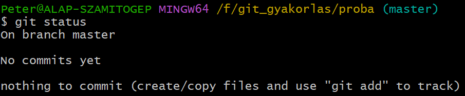
- Adjunk a mappához egy szoveg.txt állományt, majd ismét nézzük meg az állapotot: 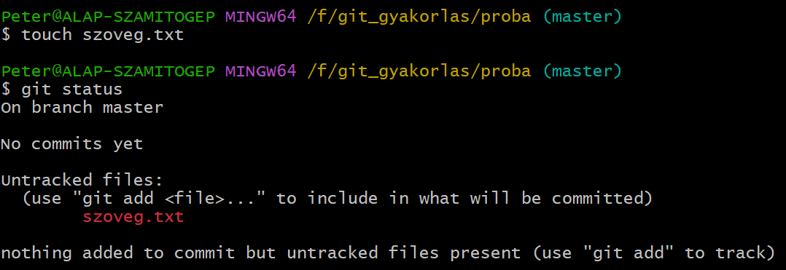
-
A szoveg.txt állományt már látja
a Git, de még nem követi. Ehhez színpadra kell rakni a
következő utasítással:
git add szoveg.txt
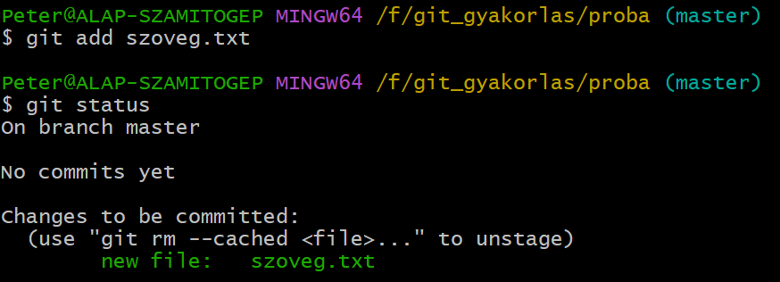
-
Ha valami miatt szeretnénk kivenni az állományt a
staging area-ból, akkor a
következő utasítást kell használnunk:
git rm --cached szoveg.txt
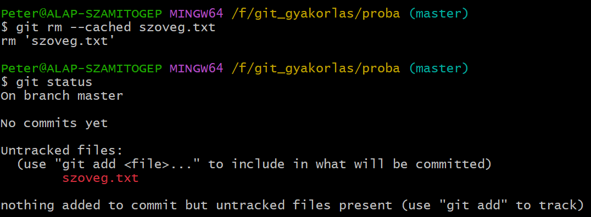
- Rakjuk vissza és módosítsuk a szoveg.txt állományt, majd nézzük meg mi történik. 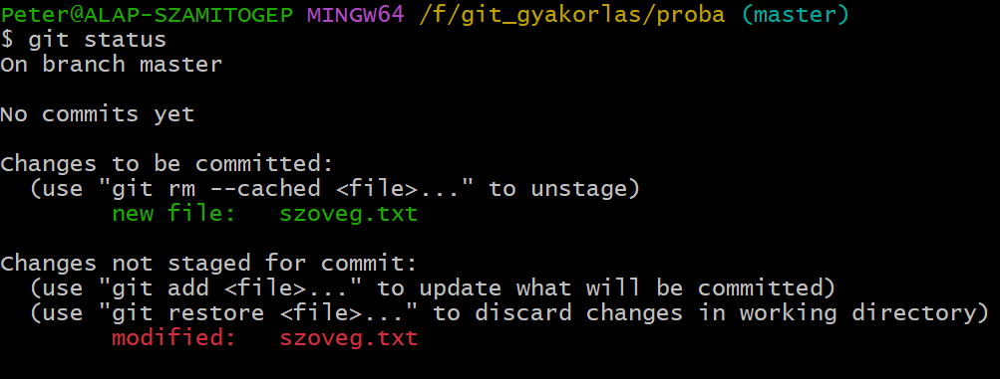
- Látható, hogy létezik egy szoveg.txt állomány a "színpadon" és van módosított, "színpadon" kívüli szoveg.txt állomány. Ha most véglegesítenénk, akkor az eredeti szoveg.txt állomány bekerülne az adattárba, míg a módosított várna arra, hogy valami történjen.
-
Rövidítve is lekérdezhetjük az állapotot. Ekkor csak
betűjelöléssel kapunk információt. Első oszlop (staging area), második oszlop (working tree)
git status -s, vagy git status --short
- A - színpadra rakott (staged)
- M - módosított (modified)
- ?? - nem követett (untracked)
- Adjunk hozzá egy masik.txt állományt is. 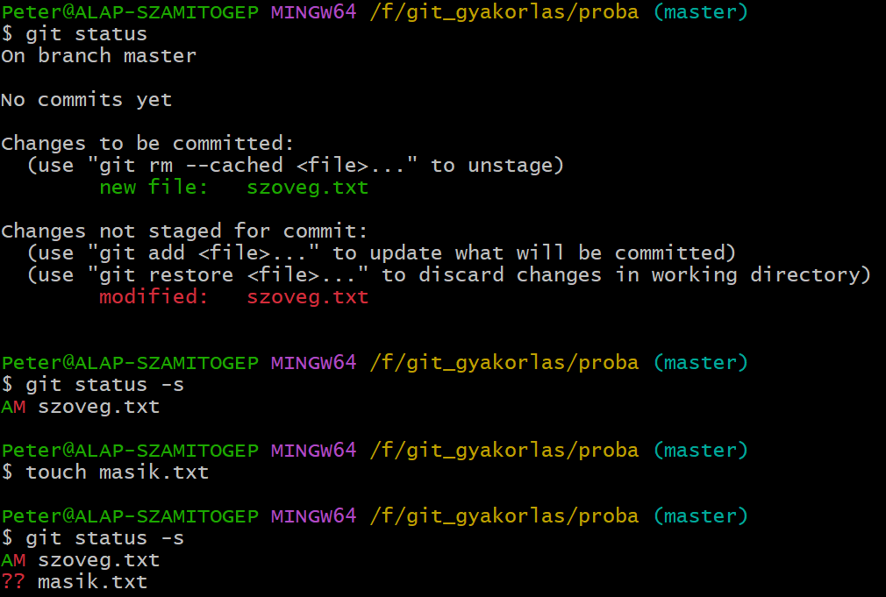
-
Két dolgot tehetünk a módosított állománnyal:
-
A módosítással "színpadra" rakjuk.
git add szoveg.txt
-
Eldobjuk a módosított állományt, és az eredetit
őrizzük meg a színpadon:
git restore szoveg.txt
-
A módosítással "színpadra" rakjuk.
-
Módosítsuk a masik.txt állományt
és rakjuk a "színpadra". Adjuk ki a következő utasításokat:
git diff - a working tree-ben történt változtatások,
git diff --staged - a staging area-ban történt változtatások, vagy
git diff --cached - a staging area-ban történt változtatások. Az utóbbi kettő ugyanazt csinálja.
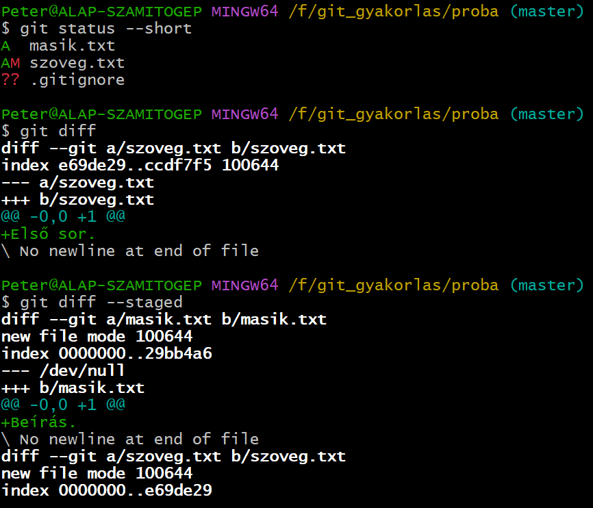
-
Grafikus felületen is megnézhetjük a változásokat. Ehhez meg
kell nézni a feltelepített eszközök listáját:
git difftool --tool-help
Majd a kiválasztott eszközt használom:git difftool --tool=vimdiff
Kilépés esc majd :q! begépelése és enter. - .gitignore: ebben az állományban rögzítjük azokat a mappákat és állományokat, amelyeket nem akarunk követni. Egyfajta reguláris kifejezésekkel (glob patterns) záratjuk ki az elemeket. 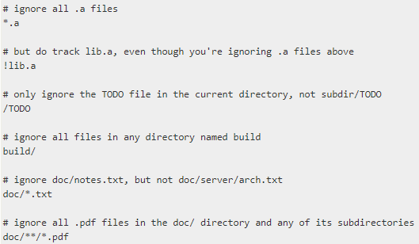
-
Ha úgy érezzük, hogy minden készen áll a véglegesítésre,
akkor adjuk ki a következő parancsot:
git commit
A következőt kapjuk:
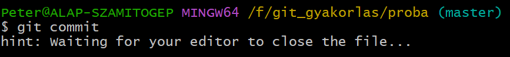
- És megnyílik a beállított szövegszerkesztő, jelen esetben a Visual Studio Code. Az első sorba írhatjuk a véglegesítés (commit) szövegét. 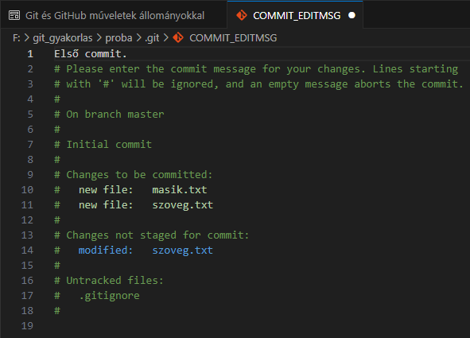
- Az ablak bezárása után kapjuk a következőt. 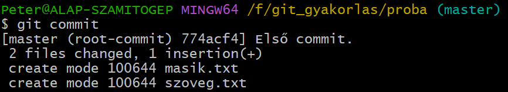
- A git commit -v utasítás eredménye megegyezik git status utasításéval. 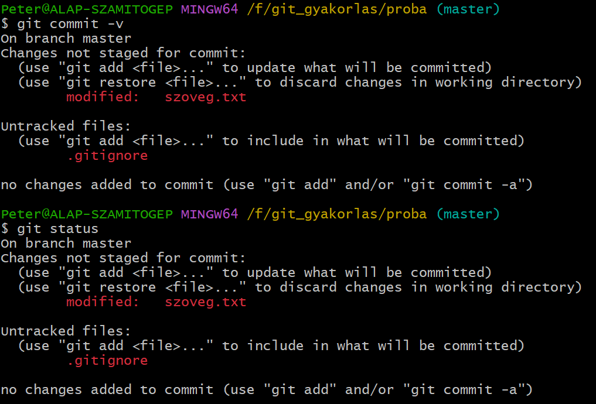
-
A git add * utasítással a
.gitignore állomány kivételével
mindent a "színpadra teszek". Majd kiadom a következő
utasítást:
git commit -m "Második kommit"
-
A .gitignore hozzáadását külön
ki kell írni:
git add .gitignore
- A véglegesítések után kapott számok az ellenőrző összeg (checksum) első 7 karaktere: [master 799e7f5]
-
Nyomon követett állományok esetében, ha módosítunk rajtuk
valamit, akkor kihagyhatjuk a "színpadra rakást" és azonnal
véglegesíthetünk a -a jelölővel.
git commit -a -m "Negyedik kommit", vagy
git commit -a "Negyedik kommit"
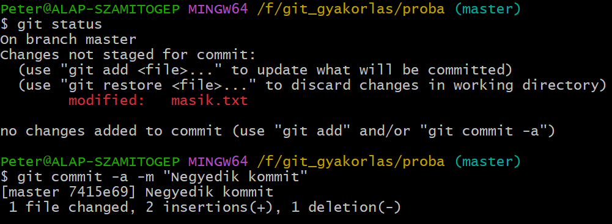
-
Ha az állományok eltávolítására a
rm [állománynév]
használjuk a követetlen állományok közül akkor a következőt kapjuk.
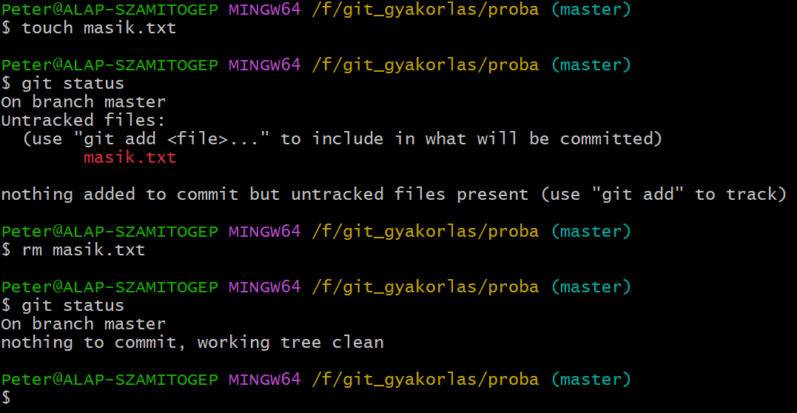
- Viszont ha már "színpadra" raktuk és utána töröljük, akkor a következő történik. 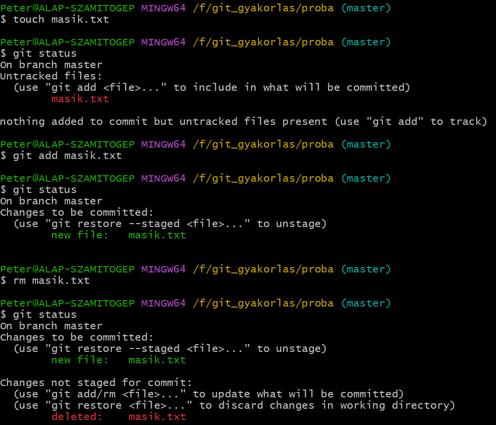
-
Bár fizikálisan törlődik a mappából, a Git még emlékezik rá,
és két lehetőséget kínál:
-
Törölni az állományt véglegesen:
git rm [állománynév]
-
Visszaállítani az állományt:
git restore [állománynév]
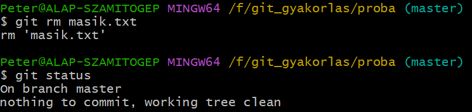
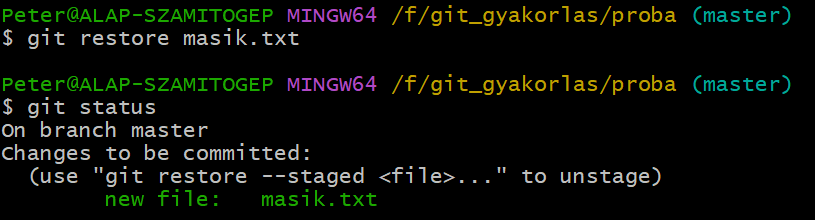
-
Törölni az állományt véglegesen:
-
Ha a "színpadon" lévő állományt a következő utasítással
töröljük
git rm --cached [állománynév],
akkor egyszerűen visszarakja a követetlen állományok közé.
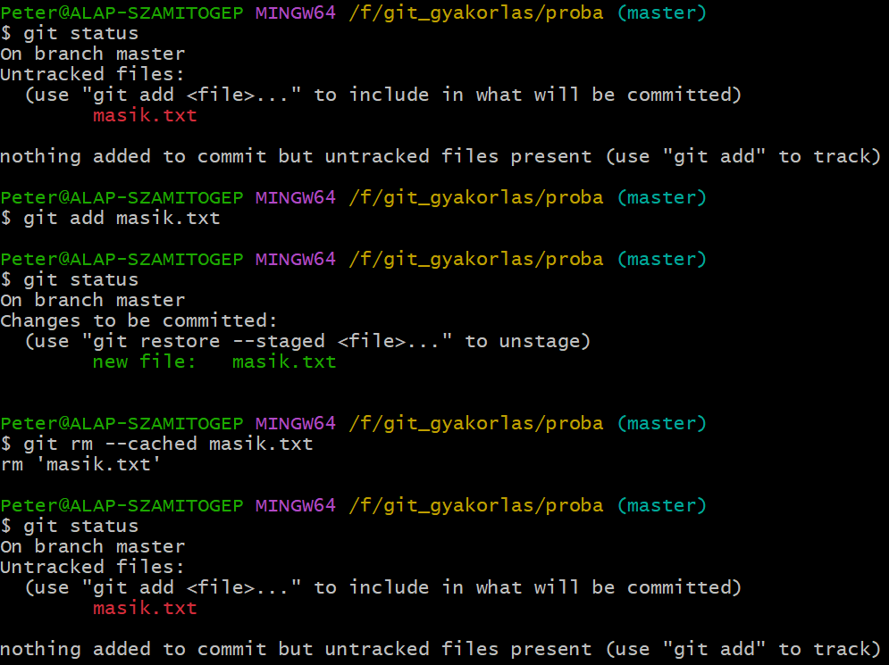
- Hasonló igaz a már véglegesített állományokra is.
-
Állományok átnevezésére a következő utasítás használható:
git mv filenevrol filenevre
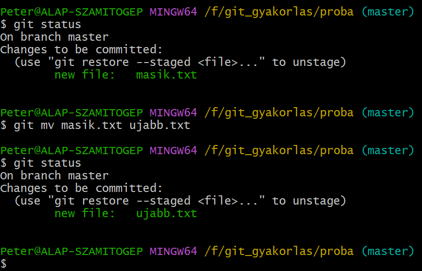
Műveletek:

 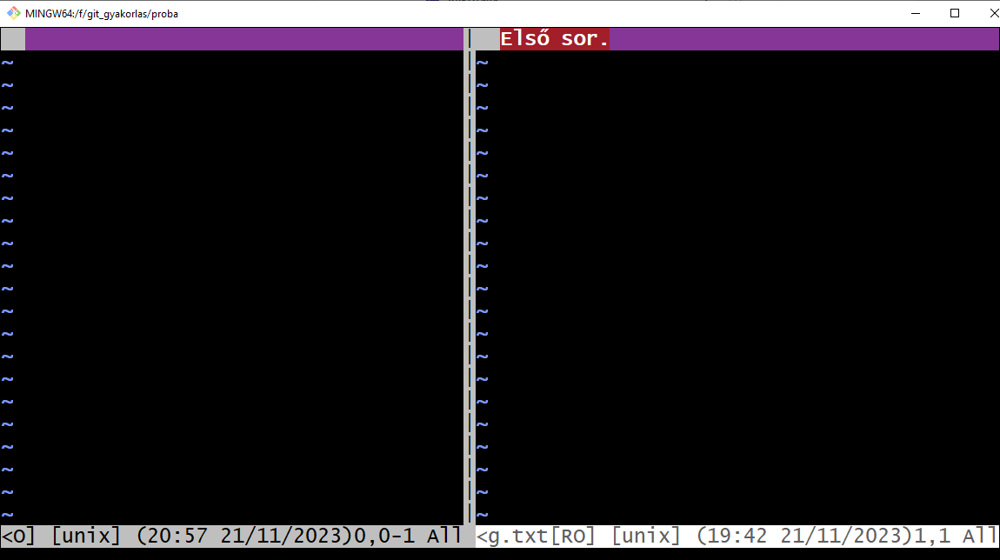
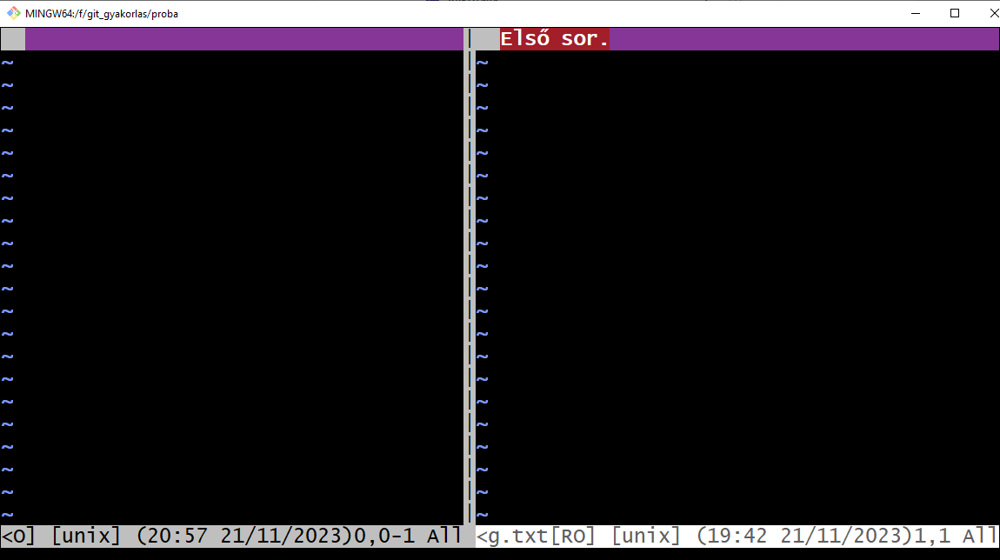